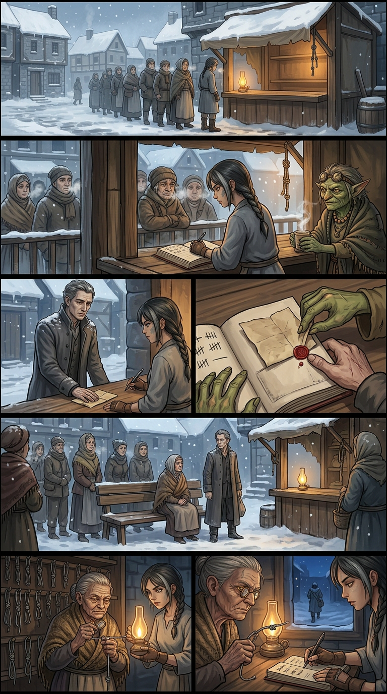
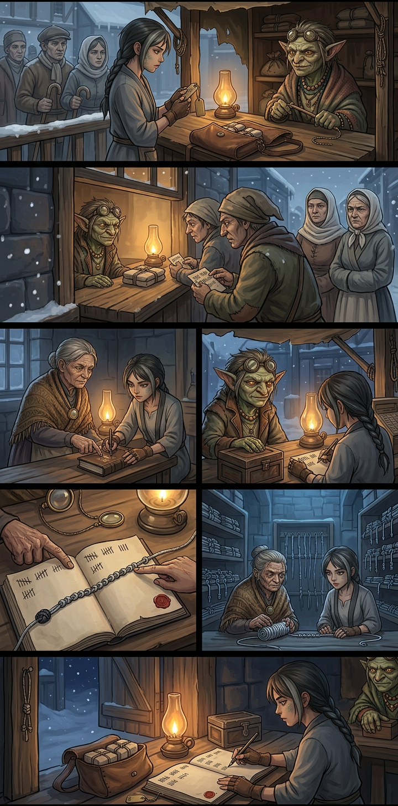
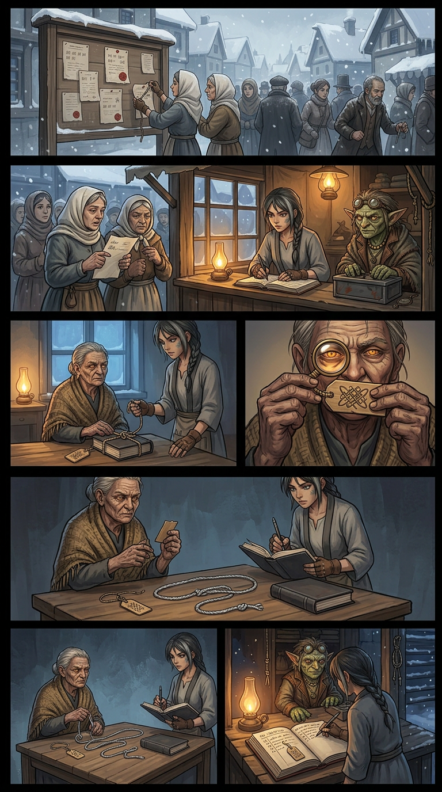
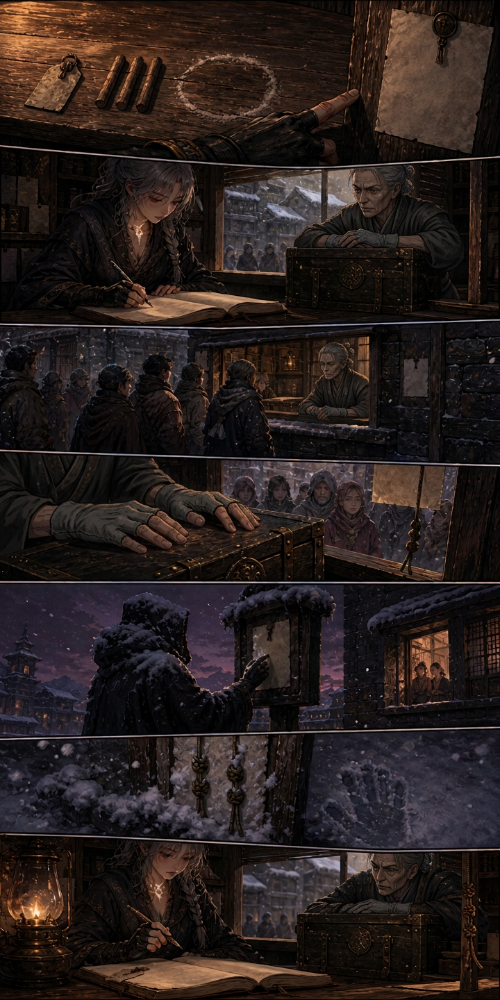
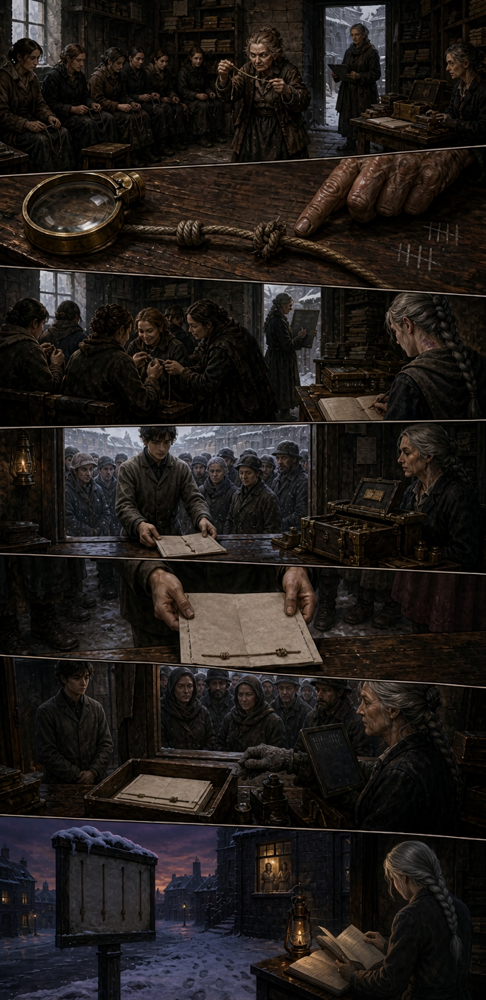
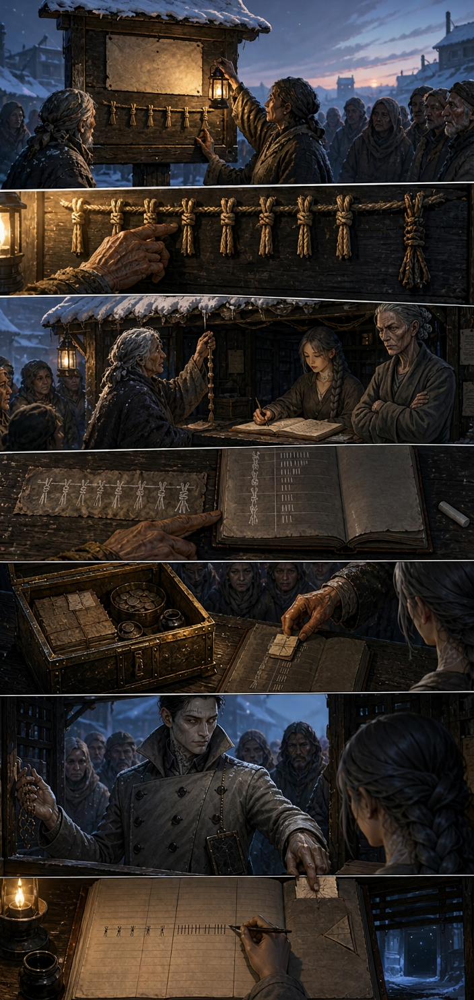
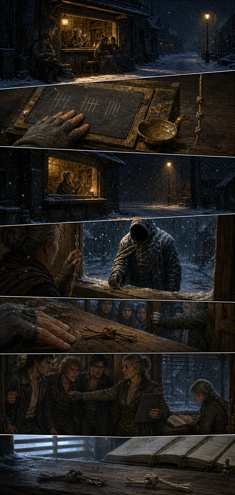
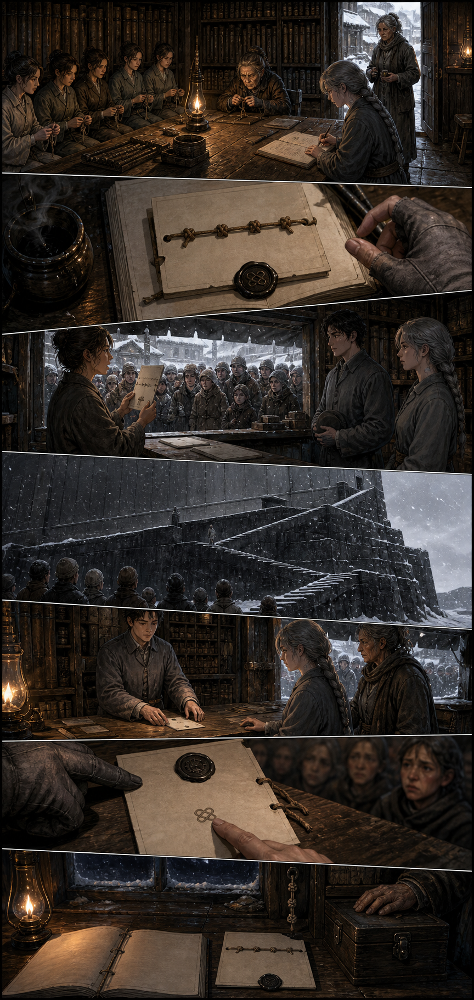
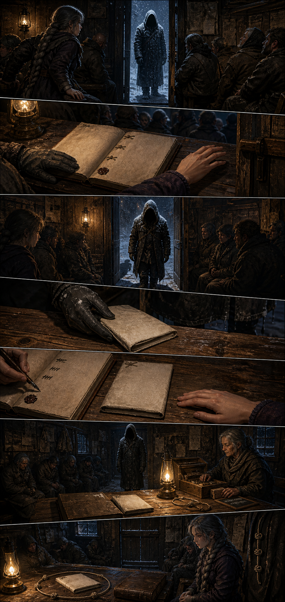
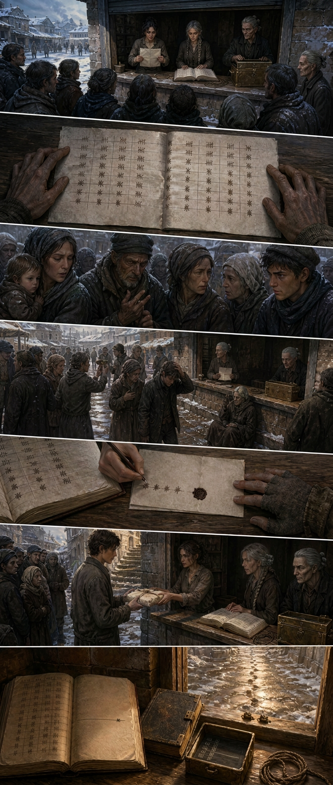

Chapter 014 — Year Nineteen
Arc I — The Unspooling · Agnikhand · 10 pages · complete · English + Hindi. Pick a page, or read straight through.

001
002
003
004
005
006
007
008
009
010Chapter 014 — Year Nineteen — CLOSE-OUT
Arc: III — The Second School · Sector: Agnikhand, Ashfall Basin · Pages: 10 Format note: English-only throughout (user instruction from Ch. 012 Page 004; AUDIT R13.22).
Chain-stop budget: ONE — SPENT on Page 009, on the threshold: the snow-heavy figure admitted through the counter's door (hood kept, no words), on a protection the register had entered blind. Not a blow and not a bargain — an admission. See AUDIT §R14.11.
Synopsis
The second Office's first winter, told as an audit. Chapter 014 opens on the first miss — the machine's weekly delivery late for the first time since the terms were accepted — and on the two things the basin does with a hole: enters it and does not guess it. Rekhak lays his paper on the counter and asks for it entered unread (protection of record, this time volunteered); Nandi opens the school's oldest rod at the year's turning and reads year nineteen, older than the Office's roll, thirty-nine seasons unbroken; and the thin delivery arrives re-tagged in the machine's grammar.
The tag is the chapter's engine. Read at the price of the keeper's second line, it is a hold mark — the machine's instrument for pausing a count by its own office — tied by a hand that is not the machine's current hand. One step on, the register has it: the delivery IS the machine's own counts, the counter's terms make every delivery public, so a hold on the delivery is a hold on the machine's paper being read. The thin week was not a shortage. It was a shield.
The basin answers a protector it cannot question with policy rather than pursuit: it keeps the window open on purpose, prices the grammar it teaches the machine by doing so, and pays. It teaches that grammar to nine women in a side room (a break is a fact; a hold is a decision). It answers the Office's courtesy form — an offer to regularize the counter's hours, complete with a second page permitting amendment at the Office's discretion — by entering it as received and answering by symmetry: the Office may post its hours on the basin's board and be read aloud too. The Office complies overnight, and its posted hours carry a seventh shift it does not count.
That hour becomes the chapter's spine. The counter keeps a night watch it was never designed to have, prices its oil at the till, reads the Office's hours aloud to an empty street twice an hour — and at the second hour the protector comes to the sill, within reach, and leaves one knot: not yet; keep reading; do not follow the hour. The queue moves for the door; the counter bars it. At dawn the counter answers in kind — one knot of its own, meaning read — and the correspondence is opened, both ways, with a hand it cannot name.
The counter then uses the machine's own politeness as a subpoena: a demand of record in the Office's grammar, four knots and the question, read aloud before it leaves, asking who keeps the hour — not what is done there. The answer is the machine's oldest dodge, the formula it erased the clerk with: the act of an individual, without authority. Read aloud, then turned: the machine has disowned its own hour in public, so the hour belongs to a person — and the register enters protection of record for whoever keeps the night hour, in the clerk's own form, with the name-space left empty, not read aloud.
The keeper comes to the door. The protection comes due in front of the whole square; the bar is lifted; he crosses the threshold with the hood up — the chapter's ONE chain-stop — keeps the hood inside, and lays one folded sheet on the counter: worn soft at the crease, carried all winter. The register takes it as received, unread, under a cord laid in a ring and left untied, and promises the reading for dawn.
At dawn the shutter goes up and the square is already there. The sheet is the night count: drawn: four measures. struck from the roll: none. carried down: four — every night of the winter, in the Office's own measures, signed by nobody and marked the hour is not the Office's. The square does its own arithmetic and finds the redistribution: the fuel reported missing was carried down into the basin by hand, all winter, through a hatch that was never on a roll. Nobody cheers. The register chooses publication over silence, writes its reading in the margin of the machine's own count — four knots and the keeper's seal — and sends the page back up the stair already read, where the machine cannot demand a paper it disowned, nor punish a hand it denied, without holding its own dodge.
The chapter closes on gold afternoon light, the school's book one line longer, Nandi's verdict — the year is whole, keeper; it ran forward and it did not break — two knots on the sill, one line of prints softening in the slush, and the smallest caption in the book: Give it back read.
What the chapter built (state carried forward)
- The second Office as an institution with a public purse. The till opened on Page 006 and paid nine lesson-lines in one entering; the risk (a school the till owns) is entered in the same book. The till now has an oil column and a school column and Kessa keeps both.
- The school as a place with a curriculum. An open lesson in machine grammar, priced a line a head, taught by Nandi to nine women who then read a hold, write a demand, and read a night count aloud. A grammar taught outside the Office is the first grammar the Office does not own.
- Protection of record, extended blind. Invented for an enemy (Ch. 013), tested by its owner's two fingers (P.006), then granted to a person the register has never met — whoever keeps the night hour — and honoured the night it was used (P.009). It now covers a nameless hand and an empty name-space that can be filled in later.
- A correspondence. Two knots on the sill and a grammar both sides learned from the machine. The register notes that a register that answers has begun something it cannot end.
- The counter's public law, extended three times: to a gift (read it where it hangs), to the machine's hours (read aloud; nothing goes up unread), and to itself (the sheet opened at the window, at dawn, in daylight, everyone at once).
- The night count, published. The winter's fuel is public knowledge; the hand is not. The page that proves the machine's rolls were honest and its silence was not.
- Unspent on purpose: the mother — never on panel, never speaking; Loom absent all chapter; the three entered hands unnamed; the old school's year-knot read but not decoded further.
- Not spent, not forgotten: the network of the Office's uncounted hour is public but its geography is not — what the hatch is, who else works it, and what the machine does now that its dodge has been read back to it are all left for Chapter 015.
Chapter engine (what made it run)
- A silence counted in the machine's own units. Every page converts something unseen into a quantity the register can enter: one paused count, three weeks of fuel, seven posted shifts, six counted, one not; four measures a night; a nine-line purse.
- Policy instead of pursuit. The counter never follows, never decodes, never catches. It opens wider, teaches the grammar, bills for the silence, and publishes what it is given. Its escalation is always publicity.
- The third grammar, run to the end: not grant, not refuse — parsed (P.001), billed (P.006), answered by symmetry (P.005), invoiced (P.008), honoured (P.009), published (P.010).
- The ladder this chapter: invoice it / enter the thin / read the tag / let him / note the absence / still folded / answer in kind / whoever keeps it / read it at dawn / give it back read.
- Chain-stop budget: ONE — SPENT on Page 009 (the threshold). See AUDIT §R14.11. The budget line above is the audit-gated literal.
See also
- Pages:
story/page-001.md…story/page-010.md(cast files per page incharacters/) - World:
other/glossary.md(51 chapter terms),other/locations.md - Images:
images/page-001.png…images/page-010.png(all agent-read; human queue retains authority — AUDIT §R14.1–§R14.11) - Prior state: Chapter 013 close-out (
../chapter-013/chapter-summary.md)